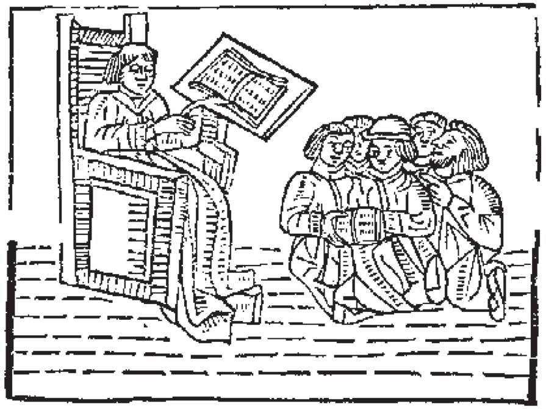

一位音乐家满身大汗地从噩梦中惊醒。梦中，他发现自己置身于一个奇特的社会，那里的音乐教育是强迫性的。“我们是要帮助学生，让他们在这个越来越多声音的世界上，变得更有竞争力。”教育专家、学校体系以及政府，一起主导这个重要计划。研究计划的进行、委员会的组成、决策的形成——这些都没有听取任何一位现职音乐家或作曲家的意见，也没让他们参与。
由于音乐家通常是把他们的构思，以乐谱的形式呈现出来，理所当然，那些奇怪的“黑色豆芽菜”和线条就是“音乐的语言”。所以，要让学生们拥有某种程度的音乐能力，当然他们得要相当精通这种语言；如果一个小孩对于音符和音乐理论没有扎实的基本功，要他唱歌或演奏乐器，将是很可笑的事。演奏或是聆听音乐（更不要说创作乐曲），被认为是相当高深的课题，通常要等到大学甚至研究所，才会教他们这些。
而在小学和中学阶段，学校的任务就是训练学生使用这种语言——根据一套固定的规则绕着符号打转：“音乐课就是我们拿出五线谱纸，老师在黑板上写下一些音符，然后我们抄写下来，或是转换成其他调。我们必须确定谱号和调号的正确性，而我们的老师对于四分音符是否涂满，要求非常严格。有一次我在半音阶（chromatic scale）的测验题中答对了，老师却没给我分数，说我把音符的符干（stems）摆错了方向。”
以教育工作者的智慧，他们很快就发现，即使很小的孩子，也可以给予这类的音乐指导。事实上，如果一个三年级的小孩无法完全记住五度循环（circle of fifths），就会被认为是很羞愧的事。“我得给我的小孩请个音乐教师了，他就是没法专心做他的音乐作业。他说那很无趣。他就是坐在那里望着窗外，自己哼着曲调，编一些愚蠢的曲子。”
较高年级的学生，压力就真的来了。毕竟，他们必须为标准化的测验和大学入学考试做准备。学生必须修习音阶（scales）和调式（modes）、拍子（meter）、和声（harmony）、复调（counterpoint）等课程。“他们得学习一大堆东西，但是等到大学他们终于听到这些东西，他们将会很感激在高中所做的这些努力。”当然，后来真的主修音乐的学生并不多，所以只有少数人得以聆听到“黑色豆芽菜”所代表的声音。然而，让社会上每个人都知道什么是转调（modulation）、什么是赋格（fugal passage）是很重要的，无论他们有没有亲耳听过。“实话告诉你吧，大部分的学生就是不擅长音乐。他们觉得上课很无聊，他们的技能不佳，他们的作业写得乱七八糟，难以辨认。而且大多数的学生，都不关心在现今世界上，音乐是多么的重要，他们希望音乐课越少越好，最好能赶快上完。我猜人就只有两种：音乐人和非音乐人。我碰到过一个小孩，她真是太优秀了！她的作业无懈可击——每个音符都在正确的位置上，完美极了，既清楚又一致，真是美丽呀。她将来一定会成为伟大的音乐家。”
这位音乐家一身冷汗地从梦中醒来，庆幸那只是一场疯狂的梦境。他跟自己说：“当然，没有哪个社会会将这么美妙又有意义的艺术形式，分解到这么不需动脑又支离破碎；也没有哪种文化会这么残酷地剥夺孩子们这种展现人类情感的自然手段。这真是荒谬呀！”
与此同时，这个城市的另一端，一位画家也从类似的梦魇中惊醒过来……我很惊讶地发现自己置身在一间普通的教室里——没有画架、没有颜料管。“喔！我们要到高中才真正开始作画。”学生们告诉我，“在七年级，我们主要学习颜色和画图器具。”他们拿给我一张练习纸，上面是一格一格的颜色样本，每种颜色旁边都有空格，要他们填上颜色的名称。其中一位学生说道：“我喜欢画画，他们告诉我怎么做，我就照着做，很简单的！”
下课后，我和老师谈了一下，我问道：“这样看来，你的学生没有真正地动手画过画啰？”老师回答我：“嗯，下一学年他们会上数字绘画学前课程，为高中主要的数字绘画课程做好准备。因此，将来他们可以把在这里所学的，应用到真实生活中的画画情境——刷子沾上涂料、刷涂等这类事项。当然我们会按照学生的能力为他们做规划。真正优秀的画家——彻底熟悉色彩及刷具的——他们可以稍微快一点进行真正的绘画，其中有些人甚至可以去上有大学学分的进阶课程。但是大部分情形，我们只是尝试给这些孩子绘画的良好基础，因此当他们离开学校进入真实世界，为他们的厨房粉刷时，就不会弄得一团糟了。”
“嗯，你所说的那些高中课程……”
“你是说数字绘画课吗？我们看到修课的人数近年来增加了不少。我认为大部分是因为父母希望他们的孩子能够进入好的大学。高中成绩单上有进阶数字绘画课是很吃香的。”
“为什么大学会在意学生能否在标明数字的区块上涂色呢？”
“喔，你知道的，这代表学生有逻辑性思考的清楚脑袋。当然，如果学生打算主修视觉科学的科系，例如时尚或是室内装潢，那么在高中就拿到绘画学分，会是很好的安排。”
“原来如此。那么学生们什么时候才会开始在空白的画布上自由作画呢？”
“你说的话真像我的一位大学老师！他总是说些表达自我、感情这一类的东西——完全是脱离现实的抽象东西。我自己拥有绘画学位，但是我从未真正地在空白的画布上作画。我用的是学校提供的数字绘画工具。”
可悲的是，我们数学教育目前的制度正好就是这样的噩梦。事实上，如果我必须设计一套制度来“摧毁”孩子们对于“创造模式”与生俱来的好奇心，我不可能比现行制度做得更好——我就是无法想象出构成当前数学教育的这种毫无意义、压迫心灵的方法。
大家都知道这个制度有问题。政治家说“我们需要更高的标准”；学校则说“我们需要更多经费和设备”；教育家有一套说法，而教师们又有另一套说法。他们通通都错了。唯一了解问题所在的是那些最常被责备，但是又最被忽略的人——学生。他们说“数学课愚蠢又无趣”，他们说对了。